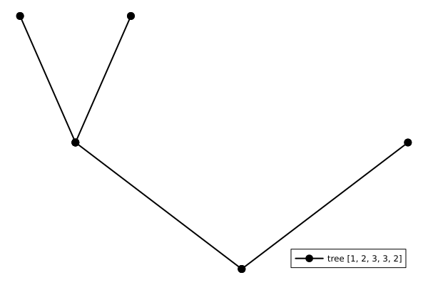
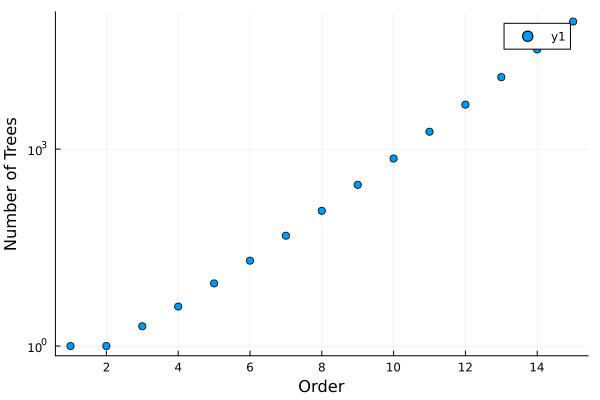
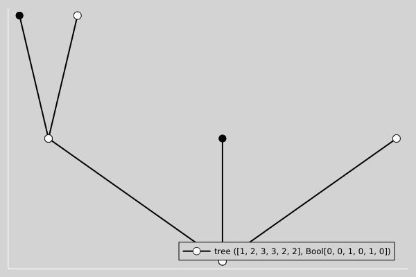

Basics, printing, and visualization
As described in the introduction, RootedTrees are represented using level sequences, i.e., AbstractVectors containing the distances of the nodes from the root. For example,
using RootedTrees
for t in RootedTreeIterator(4)
println(t)
endRootedTree{Int64}: [1, 2, 3, 4]
RootedTree{Int64}: [1, 2, 3, 3]
RootedTree{Int64}: [1, 2, 3, 2]
RootedTree{Int64}: [1, 2, 2, 2]Visualization of trees
Depending on your background, you may be more familiar with the classical notation used in the books of Butcher or Hairer & Wanner. You can get these representation via butcher_representation.
for t in RootedTreeIterator(4)
println(butcher_representation(t))
end[[[τ]]]
[[τ²]]
[[τ]τ]
[τ³]Remember that you can change the printing style globally via RootedTrees.set_printing_style.
When working with LaTeX, it can be convenient to use the LaTeX package forest to draw trees. You can find more information about this in the docstring of RootedTrees.latexify. For example,
for t in RootedTreeIterator(4)
println(RootedTrees.latexify(t))
end\rootedtree[.[.[.[.]]]]
\rootedtree[.[.[.][.]]]
\rootedtree[.[.[.]][.]]
\rootedtree[.[.][.][.]]This results in the following LaTeX output:

To get a human-readable output, you can use RootedTrees.set_latexify_style. This can be particularly helpful when working in Jupyter notebooks, e.g., by passing the output of latexify to IPython.display.Latex.
RootedTrees.set_latexify_style("butcher")
for t in RootedTreeIterator(4)
println(RootedTrees.latexify(t))
end
RootedTrees.set_latexify_style("forest")
for t in RootedTreeIterator(4)
println(RootedTrees.latexify(t))
end[[[τ]]]
[[τ²]]
[[τ]τ]
[τ³]
\rootedtree[.[.[.[.]]]]
\rootedtree[.[.[.][.]]]
\rootedtree[.[.[.]][.]]
\rootedtree[.[.][.][.]]If you want to visualize individual trees, you can also use our plot recipes for Plots.jl.
using Plots
t = rootedtree([1, 2, 3, 3, 2])
plot(t)ERROR: LoadError: UndefVarError: `Plots` not defined
Stacktrace:
[1] top-level scope
@ ~/work/RootedTrees.jl/RootedTrees.jl/ext/PlotsExt.jl:9
[2] include
@ ./Base.jl:457 [inlined]
[3] include_package_for_output(pkg::Base.PkgId, input::String, depot_path::Vector{String}, dl_load_path::Vector{String}, load_path::Vector{String}, concrete_deps::Vector{Pair{Base.PkgId, UInt128}}, source::String)
@ Base ./loading.jl:2010
[4] top-level scope
@ stdin:2
in expression starting at /home/runner/work/RootedTrees.jl/RootedTrees.jl/ext/PlotsExt.jl:1
in expression starting at stdin:2
┌ Error: Error during loading of extension PlotsExt of RootedTrees, use `Base.retry_load_extensions()` to retry.
│ exception =
│ 1-element ExceptionStack:
│ Failed to precompile PlotsExt [ee28d484-87b8-5b84-8c5c-a74b800bbc50] to "/home/runner/.julia/compiled/v1.9/PlotsExt/jl_fH6pI5".
│ Stacktrace:
│ [1] error(s::String)
│ @ Base ./error.jl:35
│ [2] compilecache(pkg::Base.PkgId, path::String, internal_stderr::IO, internal_stdout::IO, keep_loaded_modules::Bool)
│ @ Base ./loading.jl:2260
│ [3] compilecache
│ @ ./loading.jl:2127 [inlined]
│ [4] _require(pkg::Base.PkgId, env::Nothing)
│ @ Base ./loading.jl:1770
│ [5] _require_prelocked(uuidkey::Base.PkgId, env::Nothing)
│ @ Base ./loading.jl:1625
│ [6] _require_prelocked(uuidkey::Base.PkgId)
│ @ Base ./loading.jl:1623
│ [7] run_extension_callbacks(extid::Base.ExtensionId)
│ @ Base ./loading.jl:1198
│ [8] run_extension_callbacks(pkgid::Base.PkgId)
│ @ Base ./loading.jl:1255
│ [9] run_package_callbacks(modkey::Base.PkgId)
│ @ Base ./loading.jl:1083
│ [10] _require_prelocked(uuidkey::Base.PkgId, env::String)
│ @ Base ./loading.jl:1632
│ [11] macro expansion
│ @ ./loading.jl:1613 [inlined]
│ [12] macro expansion
│ @ ./lock.jl:267 [inlined]
│ [13] require(into::Module, mod::Symbol)
│ @ Base ./loading.jl:1576
│ [14] eval
│ @ ./boot.jl:370 [inlined]
│ [15] #17
│ @ ~/.julia/packages/Documenter/H5y27/src/Expanders.jl:629 [inlined]
│ [16] cd(f::Documenter.Expanders.var"#17#19"{Module, Expr}, dir::String)
│ @ Base.Filesystem ./file.jl:112
│ [17] (::Documenter.Expanders.var"#16#18"{Documenter.Documents.Page, Module, Expr})()
│ @ Documenter.Expanders ~/.julia/packages/Documenter/H5y27/src/Expanders.jl:628
│ [18] (::IOCapture.var"#3#5"{DataType, Documenter.Expanders.var"#16#18"{Documenter.Documents.Page, Module, Expr}, Task, IOContext{Base.PipeEndpoint}, IOContext{Base.PipeEndpoint}, IOContext{Base.PipeEndpoint}, IOContext{Base.PipeEndpoint}})()
│ @ IOCapture ~/.julia/packages/IOCapture/8Uj7o/src/IOCapture.jl:119
│ [19] with_logstate(f::Function, logstate::Any)
│ @ Base.CoreLogging ./logging.jl:514
│ [20] with_logger
│ @ ./logging.jl:626 [inlined]
│ [21] capture(f::Documenter.Expanders.var"#16#18"{Documenter.Documents.Page, Module, Expr}; rethrow::Type, color::Bool)
│ @ IOCapture ~/.julia/packages/IOCapture/8Uj7o/src/IOCapture.jl:116
│ [22] runner(#unused#::Type{Documenter.Expanders.ExampleBlocks}, x::Markdown.Code, page::Documenter.Documents.Page, doc::Documenter.Documents.Document)
│ @ Documenter.Expanders ~/.julia/packages/Documenter/H5y27/src/Expanders.jl:627
│ [23] dispatch(::Type{Documenter.Expanders.ExpanderPipeline}, ::Markdown.Code, ::Vararg{Any})
│ @ Documenter.Utilities.Selectors ~/.julia/packages/Documenter/H5y27/src/Utilities/Selectors.jl:170
│ [24] expand(doc::Documenter.Documents.Document)
│ @ Documenter.Expanders ~/.julia/packages/Documenter/H5y27/src/Expanders.jl:42
│ [25] runner(#unused#::Type{Documenter.Builder.ExpandTemplates}, doc::Documenter.Documents.Document)
│ @ Documenter.Builder ~/.julia/packages/Documenter/H5y27/src/Builder.jl:226
│ [26] dispatch(#unused#::Type{Documenter.Builder.DocumentPipeline}, x::Documenter.Documents.Document)
│ @ Documenter.Utilities.Selectors ~/.julia/packages/Documenter/H5y27/src/Utilities/Selectors.jl:170
│ [27] #2
│ @ ~/.julia/packages/Documenter/H5y27/src/Documenter.jl:273 [inlined]
│ [28] cd(f::Documenter.var"#2#3"{Documenter.Documents.Document}, dir::String)
│ @ Base.Filesystem ./file.jl:112
│ [29] makedocs(; debug::Bool, format::Documenter.Writers.HTMLWriter.HTML, kwargs::Base.Pairs{Symbol, Any, NTuple{4, Symbol}, NamedTuple{(:modules, :sitename, :pages, :strict), Tuple{Vector{Module}, String, Vector{Pair{String, Any}}, Bool}}})
│ @ Documenter ~/.julia/packages/Documenter/H5y27/src/Documenter.jl:272
│ [30] top-level scope
│ @ ~/work/RootedTrees.jl/RootedTrees.jl/docs/make.jl:44
│ [31] include(mod::Module, _path::String)
│ @ Base ./Base.jl:457
│ [32] exec_options(opts::Base.JLOptions)
│ @ Base ./client.jl:307
│ [33] _start()
│ @ Base ./client.jl:522
└ @ Base loading.jl:1204
Number of trees
The number of rooted trees grows exponentially. Please consider this when iterating over some set of rooted trees. The implementations in RootedTrees.jl are reasonably efficient, but an exponential growth will always win in the end.
The function count_trees iterates over rooted trees explicitly. Thus, it provides a lower bound on the computational complexity of operations on all trees. For example,
julia> using RootedTreesjulia> @time count_trees(10)0.000016 seconds (1 allocation: 144 bytes) 719julia> @time count_trees(20)0.390694 seconds (1 allocation: 224 bytes) 12826228
A nice way to create and print tables of properties of trees is by using the Julia package PrettyTables.jl.
julia> using RootedTrees, PrettyTablesjulia> orders = 1:101:10julia> pretty_table(hcat(orders, count_trees.(orders)), header=["Order", "# Trees"])┌───────┬─────────┐ │ Order │ # Trees │ ├───────┼─────────┤ │ 1 │ 1 │ │ 2 │ 1 │ │ 3 │ 2 │ │ 4 │ 4 │ │ 5 │ 9 │ │ 6 │ 20 │ │ 7 │ 48 │ │ 8 │ 115 │ │ 9 │ 286 │ │ 10 │ 719 │ └───────┴─────────┘
To get the corresponding number of Runge-Kutta (RK) order conditions, we must sum up the number of trees, i.e.,
julia> using RootedTrees, PrettyTablesjulia> orders = 1:101:10julia> pretty_table(hcat(orders, cumsum(count_trees.(orders))), header=["Order", "# RK Order Conditions"])┌───────┬───────────────────────┐ │ Order │ # RK Order Conditions │ ├───────┼───────────────────────┤ │ 1 │ 1 │ │ 2 │ 2 │ │ 3 │ 4 │ │ 4 │ 8 │ │ 5 │ 17 │ │ 6 │ 37 │ │ 7 │ 85 │ │ 8 │ 200 │ │ 9 │ 486 │ │ 10 │ 1205 │ └───────┴───────────────────────┘
We can also visualize the exponential growth.
using Plots
orders = 1:15
scatter(orders, count_trees.(orders), yscale=:log10,
xguide="Order", yguide="Number of Trees")
Colored trees
A lot of the same functionality is also available for colored trees. Note that the additional choice of different colors increases the number of trees significantly. For example, the number of trees of order 3 increases from
for t in RootedTreeIterator(3)
println(t)
endRootedTree{Int64}: [1, 2, 3]
RootedTree{Int64}: [1, 2, 2]to
for t in BicoloredRootedTreeIterator(3)
println(t)
endColoredRootedTree{Int64}: ([1, 2, 3], Bool[0, 0, 0])
ColoredRootedTree{Int64}: ([1, 2, 3], Bool[1, 0, 0])
ColoredRootedTree{Int64}: ([1, 2, 3], Bool[0, 1, 0])
ColoredRootedTree{Int64}: ([1, 2, 3], Bool[1, 1, 0])
ColoredRootedTree{Int64}: ([1, 2, 3], Bool[0, 0, 1])
ColoredRootedTree{Int64}: ([1, 2, 3], Bool[1, 0, 1])
ColoredRootedTree{Int64}: ([1, 2, 3], Bool[0, 1, 1])
ColoredRootedTree{Int64}: ([1, 2, 3], Bool[1, 1, 1])
ColoredRootedTree{Int64}: ([1, 2, 2], Bool[0, 0, 0])
ColoredRootedTree{Int64}: ([1, 2, 2], Bool[1, 0, 0])
ColoredRootedTree{Int64}: ([1, 2, 2], Bool[0, 1, 0])
ColoredRootedTree{Int64}: ([1, 2, 2], Bool[1, 1, 0])
ColoredRootedTree{Int64}: ([1, 2, 2], Bool[0, 1, 1])
ColoredRootedTree{Int64}: ([1, 2, 2], Bool[1, 1, 1])RootedTrees.latexify also supports bicolored rooted trees:
for t in BicoloredRootedTreeIterator(3)
println(RootedTrees.latexify(t))
end\rootedtree[.[.[.]]]
\rootedtree[o[.[.]]]
\rootedtree[.[o[.]]]
\rootedtree[o[o[.]]]
\rootedtree[.[.[o]]]
\rootedtree[o[.[o]]]
\rootedtree[.[o[o]]]
\rootedtree[o[o[o]]]
\rootedtree[.[.][.]]
\rootedtree[o[.][.]]
\rootedtree[.[o][.]]
\rootedtree[o[o][.]]
\rootedtree[.[o][o]]
\rootedtree[o[o][o]]The style can be adapted as well via RootedTrees.set_latexify_style.
RootedTrees.set_latexify_style("butcher")
for t in BicoloredRootedTreeIterator(3)
println(RootedTrees.latexify(t))
end
RootedTrees.set_latexify_style("forest")
for t in BicoloredRootedTreeIterator(3)
println(RootedTrees.latexify(t))
end[[τ₀]₀]₀
[[τ₀]₀]₁
[[τ₀]₁]₀
[[τ₀]₁]₁
[[τ₁]₀]₀
[[τ₁]₀]₁
[[τ₁]₁]₀
[[τ₁]₁]₁
[τ₀²]₀
[τ₀²]₁
[τ₁τ₀]₀
[τ₁τ₀]₁
[τ₁²]₀
[τ₁²]₁
\rootedtree[.[.[.]]]
\rootedtree[o[.[.]]]
\rootedtree[.[o[.]]]
\rootedtree[o[o[.]]]
\rootedtree[.[.[o]]]
\rootedtree[o[.[o]]]
\rootedtree[.[o[o]]]
\rootedtree[o[o[o]]]
\rootedtree[.[.][.]]
\rootedtree[o[.][.]]
\rootedtree[.[o][.]]
\rootedtree[o[o][.]]
\rootedtree[.[o][o]]
\rootedtree[o[o][o]]Plotting is of course also implemented for colored rooted trees.
using Plots
t = rootedtree([1, 2, 3, 3, 2, 2], Bool[0, 0, 1, 0, 1, 0])
plot(t)
The general implementation supports more than two colors, e.g.,
using Plots
t = rootedtree([1, 2, 3, 3, 2], [1, 2, 3, 4, 5])
plot(t)
However, the support for multiple colors is limited at the moment, e.g., concerning efficient iterators.